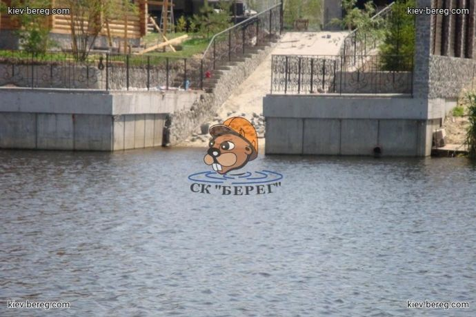
Строительная компания «Берег» · гидротехническое строительство с 2004 года
Укрепление берега, причалы и водоёмы в Киеве и по Украине
Гидротехническое строительство, общестроительные работы, благоустройство. Интернет-магазин строительных материалов.
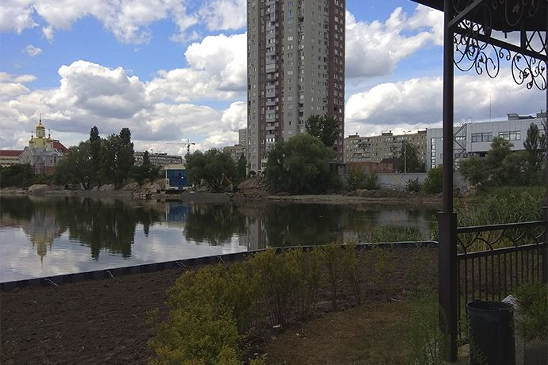
-
Сроки по договору
Согласовываем этапы и сроки до начала работ
-
Контроль работ
Подбираем материалы и технологию под объект
-
Цена до старта
Расчёт и условия фиксируются перед началом работ
Разрез берега: 9 технологий укрепления
Выберите технологию — схема покажет, из чего состоит конструкция и что находится ниже уреза воды. Под каждой — страница с подробным описанием и реальный объект.
01 / 09
Укрепление берега дубом
Дубовый брус или кругляк погружают в грунт частоколом и крепят растяжками к анкерным сваям на берегу, затем стену засыпают со стороны суши. Подходит для природных и декоративных прудов, речек и заток с малым течением; есть эконом-вариант.
02 / 09
Укрепление берега ПВХ-шпунтом
Шпунт погружают вибрационным способом по всей длине берега: шпунтины соединяются в замок и образуют цельную стену, которую сверху усиливают ростверком или поясом и крепят к анкерным сваям. Не гниёт, не ржавеет и подходит даже для морской воды.
03 / 09
Укрепление берега георешёткой
Георешётку растягивают по склону, фиксируют анкерами и заполняют грунтом, щебнем или песком; ячейки можно засеять травой. Берег сохраняет естественные очертания, но грунт укрепляется только поверхностно.
04 / 09
Укрепление берега габионами
На подготовленное основание укладывают матрацы Рено, на них — короба габионов с камнем, затем стену засыпают со стороны берега. Благодаря весу и пористой структуре габионы гасят волну и не требуют дренажа за стеной.
05 / 09
Укрепление берега матрацами Рено
Плоские габионные матрацы защищают дно, подводную и надводную часть откоса от размыва и служат основанием для габионной стены. Хорошая альтернатива георешётке на откосах.
06 / 09
Укрепление берега камнем
На подготовленный склон укладывают геотекстиль, в подводной части формируют упорную призму и насыпают камень. Метод для относительно пологих берегов: линия берега получается естественной, криволинейной.
07 / 09
Укрепление берега монолитным железобетоном
Вдоль берега забивают сваи, вяжут арматурный каркас и заливают стену гидротехническим бетоном, затем засыпают её со стороны берега и при необходимости делают дренаж. Применяется при высокой волновой и ледовой нагрузке и подвижных грунтах.
08 / 09
Укрепление берега железобетонными сваями и плитами
Железобетонные сваи погружают спецтехникой, со стороны берега между ними устанавливают плиты и объединяют конструкцию монолитным поясом-ростверком. Метод для рек, каналов, больших озёр и устройства эллингов.
09 / 09
Укрепление берега железобетонным шпунтом
Железобетонные шпунтины с гребнем и пазом глубоко погружают в грунт вплотную друг к другу — получается шпунтовая стенка, которую при необходимости крепят к анкерным сваям. Выдерживает самые большие нагрузки, но требует тяжёлой техники и проектирования.
Услуги: найдите задачу по месту, где она находится
24 направления — от укрепления берега и причалов до очистки водоёмов и промышленных гидросооружений. Расчёт и условия фиксируем до начала работ.
▽ берег Берег и участок
≈ на воде Работы на воде
◡ водоёмы Водоёмы
▭ промышленные Промышленные объекты
Объекты, которые мы уже сделали
С 2004 года — объекты в Киеве, Киевской области и других регионах Украины. Каждая карточка ведёт на описание работ с фотографиями.
-
-
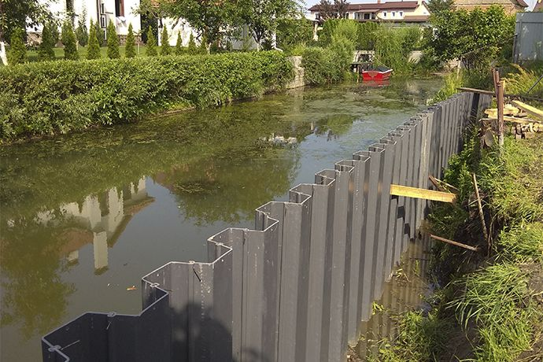
-
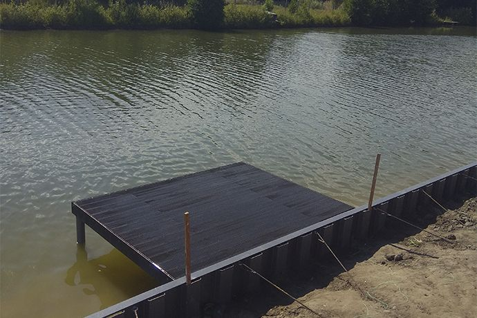
Севериновка
Укрепление берега ПВХ-шпунтом и устройство пирса (откроется в новой вкладке)
ПВХ-шпунт · пирс
-
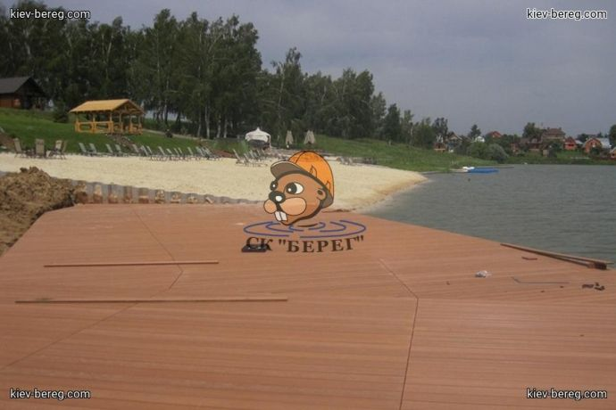
-
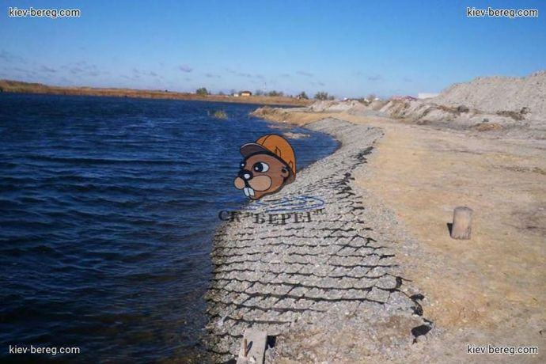
-
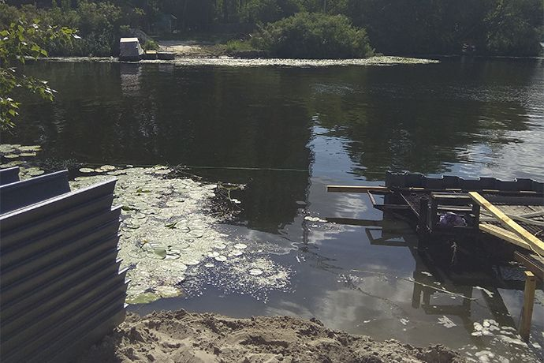
Как мы работаем: шесть шагов от звонка до акта
Цена, сроки и порядок работ согласуются до начала строительства и закрепляются в договоре.
-
Шаг 1. Обращение
Консультация и предварительная оценка задачи.
-
Шаг 2. Выезд на объект
Осмотр берега или участка и замеры.
-
Шаг 3. Смета и согласование
Составляем смету и согласовываем её с вами.
-
Шаг 4. Договор
Заключаем договор.
Условия сотрудничества, объём работ и гарантийные обязательства фиксируются в договоре.
-
Шаг 5. Выполнение работ
Сроки — от двух недель до трёх месяцев, в зависимости от сложности и объёма.
-
Шаг 6. Сдача объекта
Подписываем акт выполненных работ.
Материалы для берега и участка
13 категорий интернет-магазина: материалы для укрепления берега, благоустройства и ландшафтных работ. Подробности и заказ — на страницах каталога; доставка по Киеву, области и Украине.
-
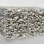
Габионы -
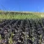
Геоматы - Георешётка
-
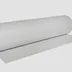
Геотекстиль -
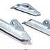
Грунтовые анкеры -
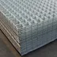
Сетка для габионов -
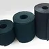
Бордюрная лента садовая -
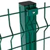
3D-заборы -
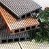
Террасная доска Holzdorf - Лакокрасочные материалы
-
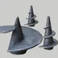
Наконечники для винтовых свай - ПВХ-шпунт
-
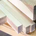
Пиломатериалы (дуб)
Вопросы и ответы
Какие услуги предоставляет Строительная компания «Берег»?
Компания предоставляет услуги гидротехнического и общегражданского строительства и продаёт строительные материалы.
В каких регионах Украины работает компания?
Компания расположена в Киеве. Услуги гидротехнического строительства и доставка товаров — по всей Украине.
Какие товары можно купить в интернет-магазине?
Материалы для гидротехнического и отдельных видов общегражданского строительства: габионы, геосинтетику, ПВХ-шпунт, террасную доску и другие.
Можно ли заказать на сайте строительные материалы с доставкой?
Да, купленные на сайте товары доставляются по Киеву и Киевской области, а также по Украине.
Контакты
Позвоните или напишите в мессенджер — обсудим задачу и договоримся о выезде на объект.
- адрес
- Киев, ул. Петропавловская, 34А
- часы работы
-
- Пн–Пт 9:00–19:00
- Сб 9:00–16:00
- Вс выходной
- юрлицо
- ТОВ «Будівельна компанія „Берег“»
ЄДРПОУ 06711096